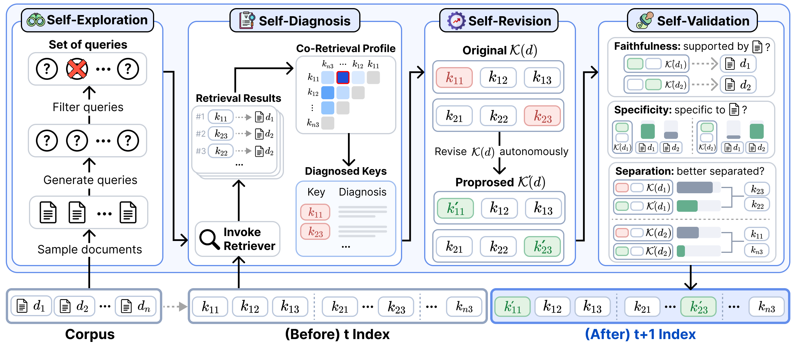

Why Self-Index?
Retrieval quality depends on how well index keys expose document knowledge. Because effective representations vary across corpora and retrievers, the index needs to evolve to fit its retrieval environment. Existing approaches make this evolution costly in two ways.
Human Effort
Humans must diagnose retrieval failures and refine the optimization strategy, through manual changes or additional relevance annotations and retraining.
Computational Cost
Applying each revised strategy requires reprocessing all index keys. This cost recurs as new retrieval failures call for further refinement.
Self-Index addresses these bottlenecks by automating index evolution and selectively updating the affected keys.
Self-Index Framework

Self-Diagnosis
Uses retrieval outcomes and co-retrieval patterns to identify index shortfalls, without requiring query-document relevance annotations.
Self-Revision
Autonomously decides how to refine the affected key sets, while keeping the underlying documents unchanged.
Self-Validation
Checks generated keys for faithfulness, specificity, and separation, accepting only validated revisions into the index.
Self-Exploration
A Query Simulator explores retrieval demands not yet covered, allowing the index to evolve beyond the queries already available.
🚀 Performance Highlights
Self-Index improves retrieval across natural language, code, math, and tables, with benefits extending to search agents and agent memory.
Stronger Retrieval
+57.0% (BGE)
+40.4% (BM25)
Relative gains in average nDCG@10 on BRIGHT over the corresponding base index.
More Efficient Search Agents
+41.1% accuracy
−24.0% online cost
Relative changes on BrowseComp-Plus for Kimi-K2.5 with BM25, compared with the base index.
Better Agent Memory
+13.9% overall
0.415 → 0.472
Relative overall score gain on LongMemEval-V2 for the Query → Slice baseline.
Reported results from the paper. Online cost excludes offline index construction.